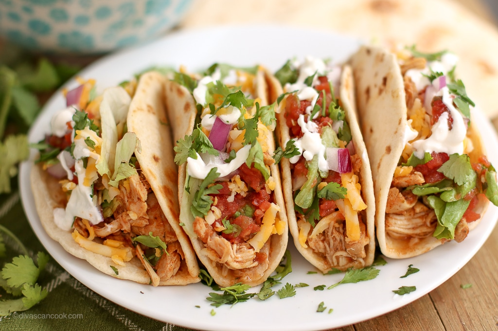
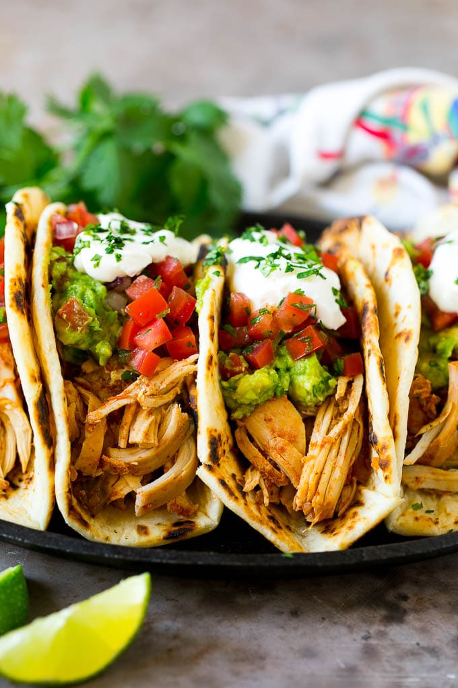
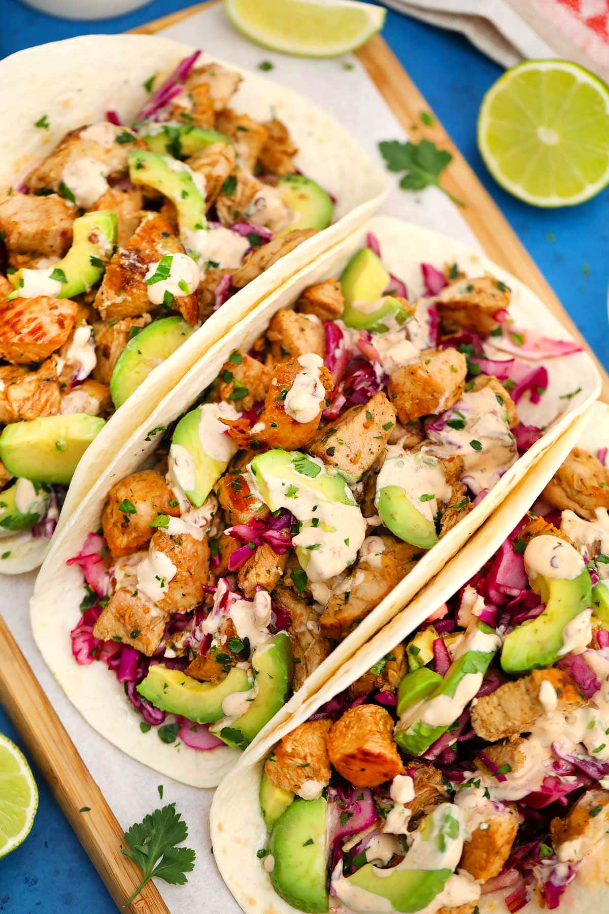

Toasty's Great Chicken tacos
|  |
 |
 |
Things you will need
- Taco shell
- Chicken Breast
- Goya Taco seasoning
- Salt
- Flour
- Pepper
- Red crushed pepper flakes
- Oil
- Different toppings of your choice
Method of cooking
- Put taco shells on a tray and put it on the over on high heat so that they crisp up
- While the shells crisp up cut up the chicken breast into finely sliced strips
- Put into a big bowl all the spices and seasoning
- Put into another bowl just flour
- Put oil in a pan on mediuem heat
- Dunk the strips in the flour
- Then dunk them into the seasoing bowl
- Coating it all around
- Then put them into the hot oil til golden brown
- Cut them up and top with your fav toppings
- Lastly enjoy